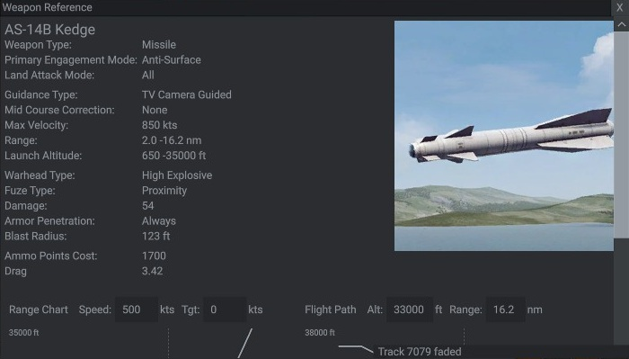

I have played the game for about 600 hours in total and also I am very interested in naval combat, both in WW1 and WW2 and the cold war. If you're struggling with the game, some of these tips and tricks can help you get a better grip on the game and have a more satisfying and enjoyable experience.
- Be very careful with your emissions, both radar and sonar. You can be detected by the enemy a lot easier if you carelessly run your radars and sonars. With radar, if you have any aircraft, use those as radar stations before using your warships. Even helicopters are a huge help. If you have to use radar on warships, use them intermittently and not for long.
- If using aircraft as radar stations, like AEW or AWACS planes, make sure they have a fighter escort. While less valuable than a ship, they are still important assets and will be priority targets for hostile aircraft.
- Be careful with sonar as well. The slower your ships are going, the more effective their sonar will be. Use so-called sprint-and-drift tactics, where you speed in a certain direction for a few minutes before stopping and using active sonar. Helicopters are incredibly useful for ASW (Anti-submarine warfare), especially if they have dipping sonars.
- Sonobouys are borderline necessary for ASW. Using sonobouys turns ASW from defensive to offensive in a heartbeat. Space them out, at least two nautical miles and no more than five away from each other, and deploy them both above and below the thermal layer.
- If you're under attack by air or missile threats, turn on all your radars. The enemy already knows where you are, so being detected is no longer relevant, and you'll need to see any threats coming for you. That said, once you're confident its over, go back to EMCON (emissions control, aka turn off all your radars). Same thing with sonars and underwater threats like torpedoes.
- If you're escorting valuable units like carriers, landing ships, attack aircraft, and the like, always keep your escorting units between the high value units and any hostile units, or at least where they're likely to come from. Defending high-value units is a lot easier if hostile units have to get through your escorts compared to your escorts having to chase hostile units who have a clear shot to the high-value units.
- When launching a missile attack, the goal is to overwhelm and oversaturate the enemy's defenses. Knowing the capabilities of a warship's anti-air defenses helps in sizing up how many missiles you will need to oversaturate their defenses. Launching every anti-ship missile from a Soviet ship might seem unnecessary if they have 16-20 for example, but every missile makes the job of missile defense just a little harder. In the same vein, don't hesitate to launch all your aircraft with anti-ship missiles from an aircraft carrier or airfield at once.
- Electronic warfare (EW) is stupidly powerful in both offensive and defensive roles. Missile attacks are much easier if an EW plane is there jamming hostile radars, which cuts down on the number of missiles you need. Also if your formations are under attack and you have a carrier present like most US carriers or the Soviet Orel, launching an EW aircraft and using to jam incoming missiles makes it less likely your ships will be hit. The US has the EA-6B and the Soviets have the Ko-45 EW and T-16P for EW, use them as much as you're able.
- Knowing the capabilities of weapon systems is key. It's so much easier to make decisions on what to do if you know the capabilities of both your and hostile weapons. For example knowing the harpoon anti-ship missile's range will tell you how far you need to deploy fighters to stop aircraft from launching harpoons at your ships, or knowing the range for the SS-N-19 and which Soviet ships carry them will tell you how far away you need to be in order to keep those ships from launching against you.
- Analyzing the behavior of unknown ships can give away their identity even if you haven't been able to classify them fully yet. For example knowing that merchant and other neutral ships or aircraft don't travel in ordered formations will immediately give away the existence of hostile units if you see several unknown ships traveling at the same speed and course in an ordered formation. Also knowing that most civilian ships don't travel very quickly, rarely moving more than 20 knots, makes identifying an unknown ship traveling at 30+ knots as hostile easy.
- For unknown units, the game has the ability to request that they identify themselves. Turn on the radars of any friendly unit, then, with the friendly unit selected, press Ctrl, right click on the unidentified unit, and then scroll down to "Request: identify yourself." There are three possible responses: 1. they either acknowledge and you gain their information, 2. they refuse, or 3. they don't respond. In cases 2 and 3 you gain nothing, but if the unit is hostile they will almost always not respond. So if they refuse they are almost certainly neutral, although it might still be good to check.
- On the bottom of the tactical map, there are drawing tools that make it so much easier to draw out distances between objects. The radial tool is particularly helpful. Use that to overlay weapon ranges to give yourself a visual guide of how close or far your units need to be to either engage with a weapon system or to ensure that hostile units can't engage your units with weapon systems they have.
- Spread out your formations. It is tempting to keep all your ships close together, and while they do provide a high degree of mutual protection when close, they also make it easier for an enemy to detect and attack any high-value units. Spreading your units out will allow them to detect and engage hostiles before they get a chance at any valuable units. Especially with missile attacks, having a spread out formation that is also mutually supporting will present a gauntlet that provide more time to engage the missiles, instead of a quick screen that a small formation provides.
- On the topic of formations, they are usually different types that are better for different purposes. A circular formation, for example, is effective at air defense (because aircraft can easily attack from any given direction), while a line abreast or V formation is better for ASW (since you cover more of the ocean with ships in a line) or missile attack.


